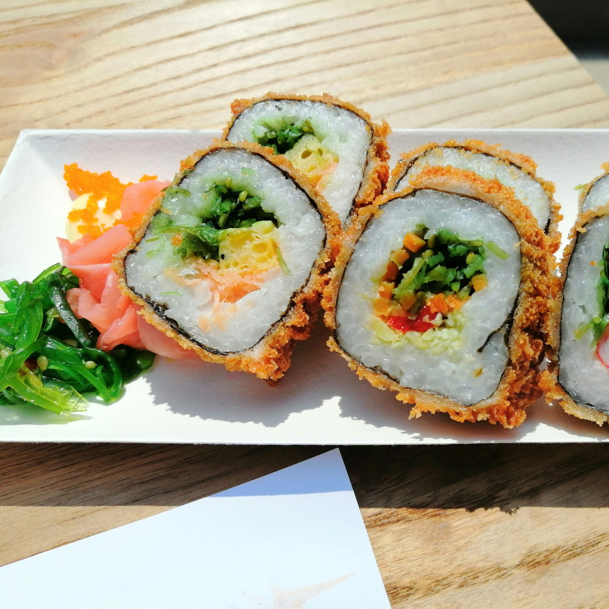
[12차시] 김밥을 얼마에 팔아야 할까?
품목별 소비자 물가 지수로 김밥 물가 지수 예측하기

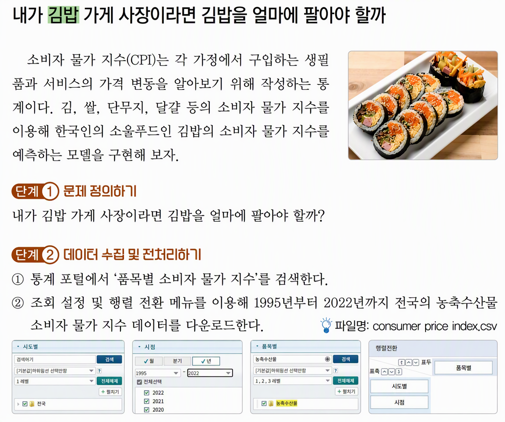
엑셀 CSV 한글 깨짐 해결 방법
| 구분 | 해결 절차 |
|---|---|
| 방법 1. 메모장에서 인코딩 재저장 | 1. 실행 중인 엑셀 창 종료 2. 메모장에서 해당 CSV 파일 열기 3. 상단 메뉴 [파일] → [다른 이름으로 저장] 선택 4. 하단 [인코딩] 항목을 UTF-8 (BOM 포함)으로 변경5. 기존 파일 덮어쓰기 저장 후 엑셀에서 재실행 후 한글 깨짐 여부 확인 6. 파일명: consumer price index.csv |
| 방법 2. 엑셀 [데이터 가져오기] 활용 | 1. 새 엑셀 통합 문서 실행 2. 상단 [데이터] 탭 → [텍스트/CSV] 선택 3. 대상 CSV 파일 선택 후 [가져오기] 클릭 4. 파일 원본 드롭다운에서 65001 : 유니코드(UTF-8) 지정5. 미리보기 한글 정상 표시 확인 후 하단 [로드] 클릭 6. 다른 이름(consumer price index.csv) 으로 저장: CSV UTF-8(쉼표 분리) |


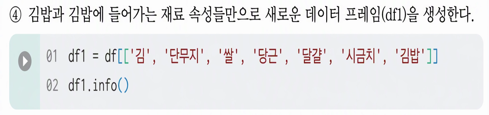


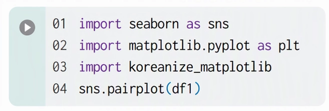

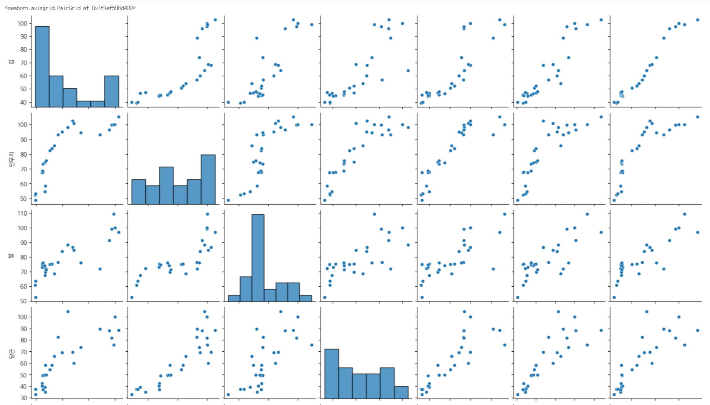

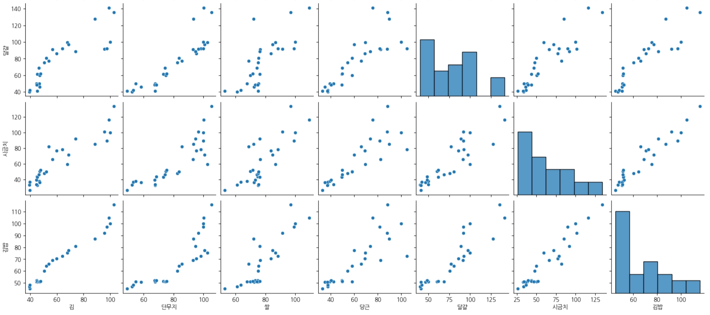
| 구분 | 대상 변수 | 상세 분포 및 관계 패턴 | 데이터 관점의 해석 |
|---|---|---|---|
| 개별 변수 분포 | 김 | 양극화 분포 (U자형) | 최소치(약 40)와 최대치(약 100) 구간에 데이터가 몰려 있는 양극화 특성을 보임. |
| 단무지 | 평탄한 고른 분포 | 50~100 전 구간에 걸쳐 데이터가 비교적 균등하게 분산됨. | |
| 쌀 | 중앙 집중형 (단봉 분포) | 70~80 구간에 강력하게 집중되어 기준량이 명확히 정해져 있음을 암시함. | |
| 당근, 달걀, 시금치, 김밥 | 오른쪽 꼬리가 긴 분포 | 낮은~중간 값 구간에 주로 집중되어 있으며 높은 값으로 갈수록 빈도가 줄어듦. | |
| 핵심 선형/곡선 관계 | 김 - 단무지 - 김밥 | 강한 비선형 양의 상관 (S자형/Sigmoid) | 김과 단무지, 완성된 김밥 간에는 매우 끈끈한 관계를 보이지만 단순 직선보다는 일정 임계점을 지나면서 급증하는 곡선 형태를 띰. |
| 가변적 관계 | 당근, 달걀, 시금치 | 넓은 산포도를 가진 양의 상관 | 전체적인 김밥 양과 함께 증가하지만 점들의 흩어짐(분산)이 크며, 레시피나 제조자의 선택에 따라 비율 조절이 자유로움. |
| 분류 | 대상 재료 | 패턴 특징 | 실제 제조 과정에서의 의미 |
|---|---|---|---|
| 필수 기준 재료 | 김, 단무지, 쌀 | S자형 곡선 및 특정 구간 집중 | 김밥의 전체 규격과 최소/최대 기준을 결정짓는 강한 결합 재료 |
| 자율 조절 재료 | 당근, 달걀, 시금치 | 퍼진 우상향 점 분포 | 김밥 크기에 비례해 늘어나지만, 양을 자유롭게 늘리거나 줄일 수 있는 가변 부재료 |
| 구분 | 구성 요소 | 축별 의미 | 그래프 해석 방법 | 이미지 내 주요 예시 |
|---|---|---|---|---|
| 1. 막대그래프 (대각선 히스토그램) | 대각선 방향 위치 | • 가로축: 재료/김밥의 양 • 세로축: 데이터 개수 (빈도수) | 단일 변수 기준 데이터의 분포 및 특정 구간 집중도 파악 | • 쌀 (3행 3열): 70~80 구간에 데이터 집중 (단봉 분포) • 김 (1행 1열): 40 부근 및 100 부근 양극화 (U자형 분포) |
| 2. 점그래프 (대각선 외 산점도) | 대각선 제외 전체 | • 가로축: X축 재료의 양 • 세로축: Y축 재료/김밥의 양 | 두 변수 간 상관관계 및 비례/자유도 파악 (점 1개 = 김밥 1줄) | • 우상향(↗) 배열: 두 재료가 함께 증가함 (예: 김과 김밥의 강한 비례 관계) • 넓은 분산 형태: 규칙성이 작고 투입 비율이 자유로움 (예: 당근, 시금치) |

annot=True: 격자 안에 실제 수치(숫자)를 적어줘.
cmap='Set1': 색상은 'Set1' 팔레트(대비가 강한 범주형 색상)로 칠해줘.


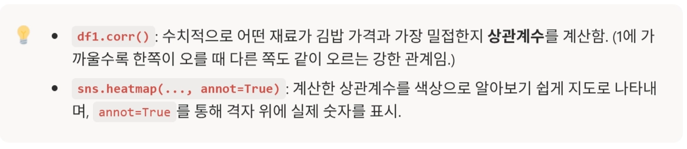
| 비교 항목 | 페어플롯 (Pairplot) | 히트맵 (Heatmap) |
|---|---|---|
| 주요 역할 | 전체 데이터의 실제 형상, 패턴, 분포 탐색 | 변수 간 상관관계의 수치적 크기 비교 |
| 비선형 관계 | S자형, 곡선 등 비선형 관계 포착 가능 | 감지 불가 (선형 상관계수 수치만 제공) |
| 이상치 / 군집 | 이상치(Outlier) 및 군집(Cluster) 직관적 확인 | 확인 불가 (이상치에 의해 수치 왜곡 발생 가능) |
| 단일 변수 분포 | 대각선 히스토그램으로 개별 분포 동시 확인 | 확인 불가 |
| 데이터 분산 | 구간별 분산 변화(이분산성) 관찰 가능 | 확인 불가 |
| 가독성 및 직관성 | 요약성이 낮으나 데이터의 세부 특성 파악에 용이 | 요약성이 높아 전체적인 관계 강도를 한눈에 파악 |

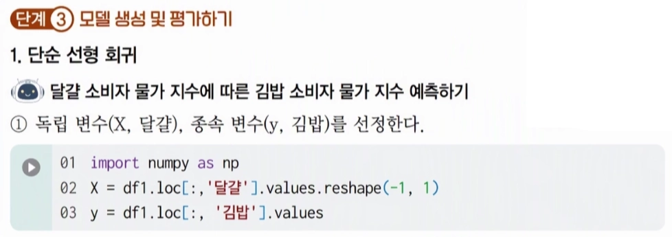

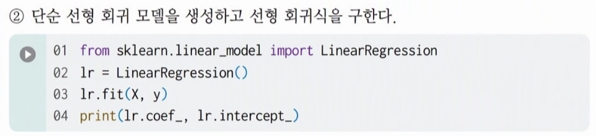

| 출력 속성 | 수치 | 수학적 / 통계적 의미 | 실무적 해석 |
|---|---|---|---|
| lr.coef_ (회귀 계수 / 기울기) | [0.63786818] | 독립변수 X가 1단위 증가할 때, 종속변수 y가 변화하는 양 | X의 양이 1 증가할 때마다 y의 예측값은 약 0.638만큼 증가함 (양의 상관관계) |
| lr.intercept_ (절편 / Y절편) | 18.695050146373497 | 독립변수 X의 값이 0일 때의 종속변수 y의 기본값 | X가 0일 때도 기본적으로 존재하는 y의 기초 수치(약 18.7)를 의미함 |

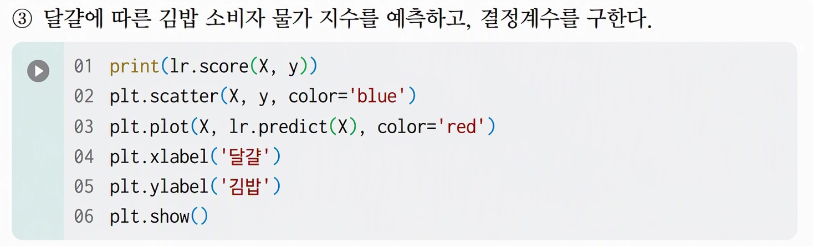


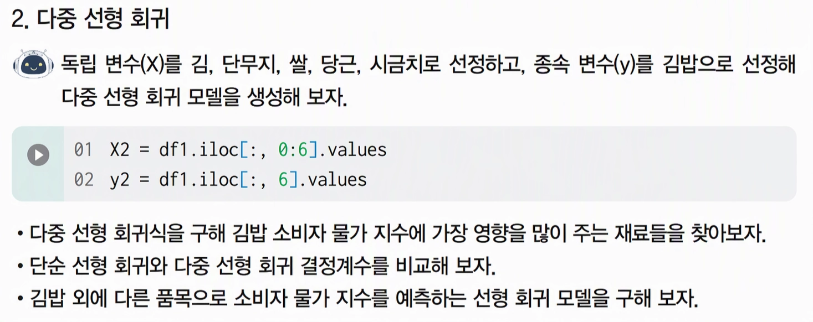
[추가 실습_01] 김밥 소비자 물가 지수에 가장 영향을 많이 주는 재료는?
- 6가지 재료(김, 단무지, 쌀, 당근, 달걀, 시금치)를 모두 고려하여 김밥 소비자 물가 지수를 예측하는 다중 선형 회귀 모델을 학습하고, 각 재료가 김밥 가격에 미치는 영향력을 확인하기
- 아래의 예상 코드를 차례로 입력하세요.
| 예상 코드 | 기능 및 의미 |
|---|---|
lr2 = LinearRegression() | 다중 선형 회귀 모델 객체를 생성함. |
lr2.fit(X2, y2) | 6개 재료 데이터(X2)와 김밥 데이터(y2)를 학습시켜 최적의 회귀 모델을 생성함. |
feature_names = df1.columns[0:6] | 전체 열 중 독립변수로 사용된 6개 재료 이름(김~시금치)을 추출함. |
print('--- [재료별 회귀 계수 (기울기)] ---') | 출력을 구분하기 위한 안내문 헤더를 출력함. |
for name, coef in zip(feature_names, lr2.coef_): | 재료 이름과 해당 재료의 회귀 계수(기울기)를 1:1로 묶어 반복 순회함. |
print(f'{name}: {coef:.4f}') | 각 재료 이름과 회귀 계수를 소수점 4자리까지 포맷팅하여 출력함. |
print(f'\n[절편 (Intercept)]: {lr2.intercept_:.4f}') | 모든 재료가 0일 때의 기본 바탕값(Y절편)을 소수점 4자리까지 출력함. |
[추가 실습_02] 단순 선형 회귀와 다중 선형 회귀의 결정계수 비교
- 김밥 소비자 물가 지수는 단일 재료(달걀)의 가격 변화만으로 예측하는 것보다, 김밥 구성 재료 전체의 물가 지수를 종합적으로 고려하는 다중 선형 회귀 모델을 적용할 때 실제 김밥 가격 변동을 거의 완벽하게 설명할 수 있음을 보여줌.
| 회귀 모델 종류 | 독립변수(X) | 결정계수 (R2 Score) | 모델의 설명력 (%) |
|---|---|---|---|
| 단순 선형 회귀 | 달걀 | ||
| 다중 선형 회귀 | 김, 단무지, 쌀, 당근, 달걀, 시금치 |
[추가 실습_03] 깁밥 외에 다른 품목으로 소비자 물가 지수를 예측하는 선형 회귀 모델 만들기
- [예] ‘밀가루’, ‘파’, ‘달걀’을 독립변수로, ‘라면’을 종속변수로 설정 → 라면 물가 지수 예측 모델 만들기